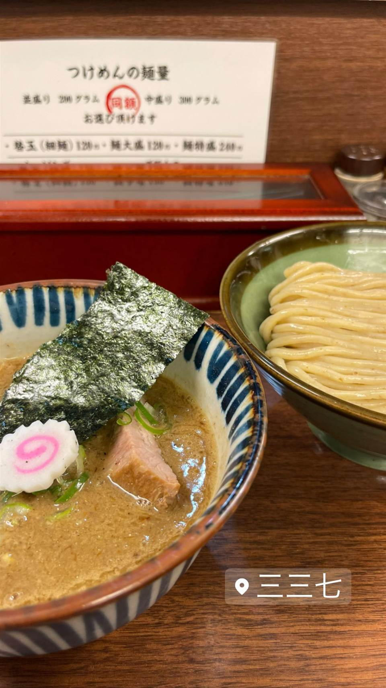

★ また行きたい豚骨で8位
自家製麺 麺屋 利八
1日熟成させた自家製太麺と吊るし焼きチャーシューの鶏白湯
自家製麺 麺屋 利八
店主・古田一哉さんが自家製麺にこだわる店で2年ほど修業した後、2014年に開業。毎日店内で製麺し1日熟成させた太麺と、塩味は控えめながら深みのある鶏白湯豚骨魚介スープが持ち味で、チャーシューを店内で吊るし焼きにするなど随所にこだわりが光る一軒。
TRIVIA
豆知識
- 麺は打った後、1日寝かせてから提供する
- チャーシューは店内で吊るし焼きにする本格製法
- 味玉には「那須御養卵」を使用
REVIEWS
世間の評判
93.2ラーメンDB
二層仕立てスープの完成度の高さ
- 濃厚な動物系白湯と煮干し・鰹節などの和出汁を合わせたスープを高く評価する声が多い
- 二層に分かれたスープがくっきり違いつつ混ざっても調和すると感じる人もいる
- 信じられないほど美味しいと評される大ぶりのチャーシューを挙げる人もいる
ラーメンデータベース 口コミ422件・総合806位・最新 2026-08
| 創業 | 2014年開業 |
|---|---|
| 系譜 | 自家製麺にこだわる店で2年ほど修業した後に独立開業。 |
| 看板 | 鶏白湯豚骨魚介系スープのラーメン |
| こだわり | 毎日店内で製麺し1日寝かせてから提供する太麺。塩味は控えめだが深みのある鶏白湯豚骨魚介系スープ。国産三元豚を店内で吊るし焼きにした自家製チャーシュー、那須御養卵の味玉。 |
| どこから | 23区の外れ・近郊 |
| 予算 | 昼 ¥1,000～¥1,999 夜 ¥1,000～¥1,999 |
| 場所 | 京急川崎駅 神奈川県川崎市川崎区宮前町2-4 |
| メモ | 京急川崎駅中央口から徒歩約8分。 |
食べたもの：ラーメン
NEARBY
近い店・同じ系統の店
-
 ★
豚骨 東高円寺駅
豚骨 蒼翔
クラウドファンディングで開業、鶏を使わない家系風豚骨
昼 ¥1,000～¥1,999 夜 ¥1,000～¥1,999
★
豚骨 東高円寺駅
豚骨 蒼翔
クラウドファンディングで開業、鶏を使わない家系風豚骨
昼 ¥1,000～¥1,999 夜 ¥1,000～¥1,999
-
 ★
豚骨 三ツ境駅
ラーメンショップ 二ツ橋店
二郎顔負けの分厚いチャーシューをのせるネギラーメン
昼 ～¥999 夜 ¥1,000～¥1,999
★
豚骨 三ツ境駅
ラーメンショップ 二ツ橋店
二郎顔負けの分厚いチャーシューをのせるネギラーメン
昼 ～¥999 夜 ¥1,000～¥1,999
-
 ★
醤油・中華そば 川崎駅・京急川崎駅
すず鬼直伝 スタミナらーめん かわさ鬼
三鷹の人気店が手がけた初プロデュース店の極太麺ラーメン
夜 ¥1,000～¥1,999
★
醤油・中華そば 川崎駅・京急川崎駅
すず鬼直伝 スタミナらーめん かわさ鬼
三鷹の人気店が手がけた初プロデュース店の極太麺ラーメン
夜 ¥1,000～¥1,999
-
 ★
豚骨 赤坂見附駅
なかご
豚骨100%なのに透き通る24時間煮込みの純粋豚そば
昼 ¥1,000～¥1,999 夜 ¥1,000～¥1,999
★
豚骨 赤坂見附駅
なかご
豚骨100%なのに透き通る24時間煮込みの純粋豚そば
昼 ¥1,000～¥1,999 夜 ¥1,000～¥1,999
-

★ つけ麺 八丁畷駅 三三七（さんさんなな） 鶏と煮干を効かせた濃厚つけ麺「煮干搾り」 昼 ～¥999 夜 ～¥999 -
 豚骨 渋谷
らーめん はやし
元副住職が独学で開いた柚子香る豚骨魚介ラーメン
豚骨 渋谷
らーめん はやし
元副住職が独学で開いた柚子香る豚骨魚介ラーメン